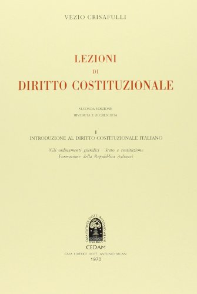

17:43 · 3 OPERE
La Corte costituzionale e la decisione sugli obblighi sanitari.
Il filo del discorso
La lettura di un articolo intitolato La solidità etico-morale di fronte alla legge prende avvio dal comunicato della Corte costituzionale del 1º dicembre 2022 sugli obblighi vaccinali. Dr Divago contesta le decisioni anticipate e le interpreta come una prevalenza di criteri collettivi sulla dignità della persona. Il commento passa attraverso indipendenza dei giudici, separazione dei poteri e stato d’eccezione. I richiami a Montesquieu, Platone e Crisafulli conducono alla conclusione sull’individuo inteso come fine e sulla funzione delle garanzie costituzionali nei confronti del potere esecutivo.
I libri nel discorso

Lo spirito delle leggi
Copertina: BUR · 1989 · a cura di Robert Derathé · edizione in due volumi
Immagine ufficiale dell’edizione BUR in due volumi; non mostra l’intera coppia di esemplari e non identifica l’edizione del video.
Montesquieu e Lo spirito delle leggi sono nominati nel passaggio sul potere che arresta il potere.
Passaggio 12:37 ↗ · Fonti e libro ↗
La Repubblica
Copertina: Laterza · La Repubblica · edizione con testo a fronte di riferimento
Immagine associata all’ISBN di riferimento e controllata visivamente; edizione e traduzione non identificate come quelle citate o lette nel video.
La Politeia è nominata a proposito dell’indipendenza del giudice.
Passaggio 12:58 ↗ · Fonti e libro ↗
Lezioni di diritto costituzionale
Immagine del volume I: CEDAM · volume I · seconda edizione riveduta e accresciuta · 1970
Immagine autentica con autore, titolo, indicazione del primo volume, editore e anno 1970 leggibili. Il repertorio registra l’opera complessiva; il volume del passo ricordato non è stato accertato.
Vezio Crisafulli e Lezioni di diritto costituzionale sono nominati prima del passo sul fascismo; volume e pagina non specificati.
Passaggio 13:20 ↗ · Fonti e libro ↗